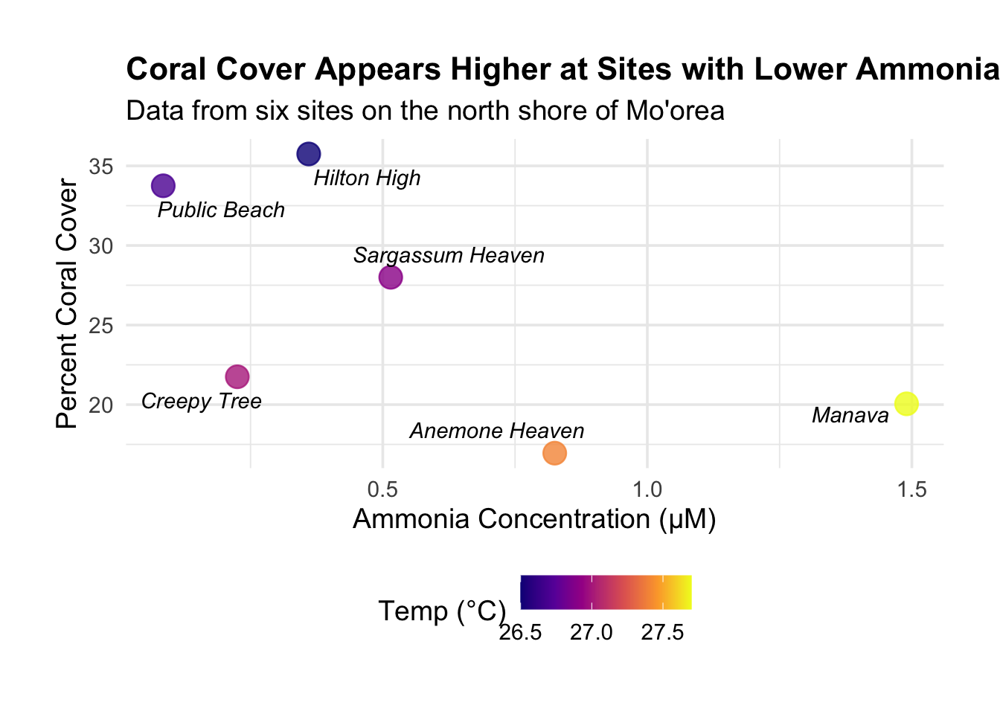

library(tidyverse)
library(here)
library(kableExtra)
library(ggrepel)Week 6 Homework
Introduction
This report takes a look at the site characteristics from Dr. Silbiger’s dataset on the coral reefs of Mo’orea. The main goal here is to whip up a publication-quality figure and table to complete the Week 6 Homework objectives!
1. Getting Started: Packages and Data
First, load up the R packages needed. tidyverse is for data wrangling and plotting, here helps keep file paths easy, kableExtra helps with tables, and ggrepel will keep plot labels from overlapping.
With the packages loaded, now to pull in the site.characteristics.data.csv data and take a peek with glimpse() to make sure everything looks right.
#Read the data using the here()
moorea_data <- read_csv(here("Week_05", "Data", "site.characteristics.data.csv"))Rows: 78 Columns: 5
── Column specification ────────────────────────────────────────────────────────
Delimiter: ","
chr (3): name, site.letter, parameter.measured
dbl (2): site.block, values
ℹ Use `spec()` to retrieve the full column specification for this data.
ℹ Specify the column types or set `show_col_types = FALSE` to quiet this message.#Look at the data
glimpse(moorea_data)Rows: 78
Columns: 5
$ name <chr> "Anemone Heaven", "Hilton High", "Public Beach", "M…
$ site.letter <chr> "F", "C", "B", "E", "D", "A", "F", "C", "B", "E", "…
$ site.block <dbl> 1, 2, 3, 1, 2, 3, 1, 2, 3, 1, 2, 3, 1, 2, 3, 1, 2, …
$ parameter.measured <chr> "light", "light", "light", "light", "light", "light…
$ values <dbl> 1674.241, 1193.230, 2647.890, 1533.245, 2114.013, 2…2. Reshaping the Data
The dataset is currently in a “long” format. I’ll reshape it into a “wide” format, where each row is a unique site and each measurement gets its own column. For this analysis, I’m only grabbing the columns for coral.cover, NH4, and temp.
#Filter for the parameters needed, then pivot to a wide format
wide_data <- moorea_data %>%
filter(parameter.measured %in% c("coral.cover", "NH4", "temp")) %>%
pivot_wider(names_from = parameter.measured, values_from = values) %>%
select(name, coral.cover, NH4, temp) # Reorder for clarity
#Check it
wide_data# A tibble: 6 × 4
name coral.cover NH4 temp
<chr> <dbl> <dbl> <dbl>
1 Anemone Heaven 17.0 0.825 27.4
2 Hilton High 35.8 0.36 26.5
3 Public Beach 33.8 0.085 26.7
4 Manava 20.0 1.49 27.7
5 Sargassum Heaven 28 0.515 26.9
6 Creepy Tree 21.8 0.225 27 3. Figure: Coral Cover vs. Ammonia
Is there a visual connection between coral cover and ammonia? I’ll put NH4 on the x-axis, coral.cover on the y-axis of a scatterplot, and label each point with its site name.
ggplot(wide_data, aes(x = NH4, y = coral.cover)) +
geom_point(aes(color = temp), size = 5, alpha = 0.8) +
#Was having issues with overlapping text so using geom_text_repel to make sure labels don't overlap
geom_text_repel(aes(label = name),
fontface = "italic",
box.padding = 0.5,
max.overlaps = Inf,
segment.color = NA) + #hides the lines connecting labels to points that I thought were unnecessary
#Tweak the legend and expand the plot area to prevent cutoff
scale_color_viridis_c(option = "plasma", breaks = c(26.5, 27.0, 27.5)) +
coord_cartesian(clip = "off") + #labels can sit outside the main plot
labs(
title = "Coral Cover Appears Higher at Sites with Lower Ammonia",
subtitle = "Data from six sites on the north shore of Mo'orea",
x = "Ammonia Concentration (μM)",
y = "Percent Coral Cover",
color = "Temp (°C)"
) +
theme_minimal(base_size = 14) +
theme(
plot.title = element_text(face = "bold", size = 16),
legend.position = "bottom",
#Was still having problems so added some breathing room around the plot for labels
plot.margin = margin(1, 1, 1, 1, "cm")
)

4. Table: A Quick Site Summary
Using kableExtra, I can lay out the key stats for each site. To draw attention to the site with the most coral, I highlighted the Hilton High row.
wide_data %>%
#Sort the data to bring the site with the highest coral cover to the top
arrange(desc(coral.cover)) %>%
#build the table with kable
kbl(
col.names = c("Site Name", "Coral Cover (%)", "Ammonia (μM)", "Temperature (°C)"),
align = "lccc",
caption = "Site Data Summary"
) %>%
#Add styling
kable_styling(bootstrap_options = c("striped", "hover"), full_width = FALSE) %>%
#Highlight the first row
row_spec(1, bold = TRUE, color = "white", background = "#4E79A7") | Site Name | Coral Cover (%) | Ammonia (μM) | Temperature (°C) |
|---|---|---|---|
| Hilton High | 35.75 | 0.360 | 26.5 |
| Public Beach | 33.75 | 0.085 | 26.7 |
| Sargassum Heaven | 28.00 | 0.515 | 26.9 |
| Creepy Tree | 21.75 | 0.225 | 27.0 |
| Manava | 20.05 | 1.490 | 27.7 |
| Anemone Heaven | 16.95 | 0.825 | 27.4 |
Conclusion
Both the plot and the table give a pretty clear picture of the Mo’orea data. Looking at Figure 1, it seems like there’s a trend where lower ammonia levels are found at sites with more coral. Hilton High, which stands out in Table 1 with the highest coral cover, also has one of the lowest ammonia concentrations. This shows that nutrient levels might be playing a significant role in the reef’s health. This reminds me of how much nutrient levels matter in reef aquariums, but instead of doing a water change on my tanks I did this Homework :)